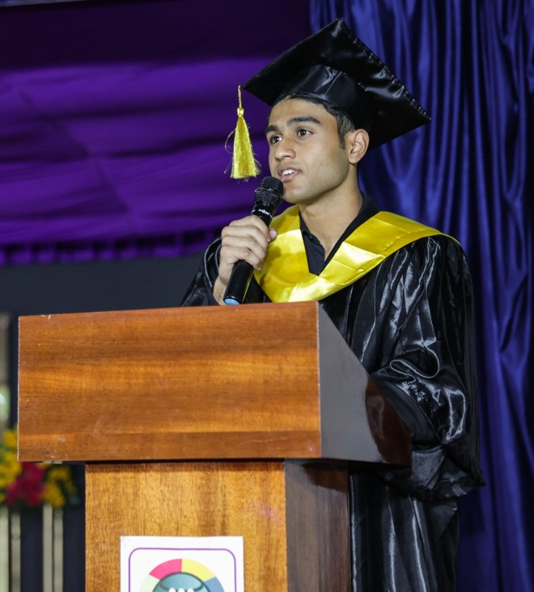

I am a student at Erasmus University Rotterdam, completing a double BSc in Econometrics and Operations Research and in Economics and Business Economics, and a BA in Philosophy. I graduate in July 2027. My interests are applied microeconometrics and economic policy, especially labour and public economics, and how markets and organisations shape incentives and behaviour.
I work as a research assistant to Philip Hans Franses (measurement error in econometric models) and Andreas Pick (panel data with heterogeneous parameters), and as a teaching assistant at Erasmus School of Economics. This fall I am on exchange at Sungkyunkwan University in Seoul. After graduating I plan to do full-time empirical research before a PhD in economics.
You can find my CV and my research here. You can reach me at a.gowda@tinbergen.nl.